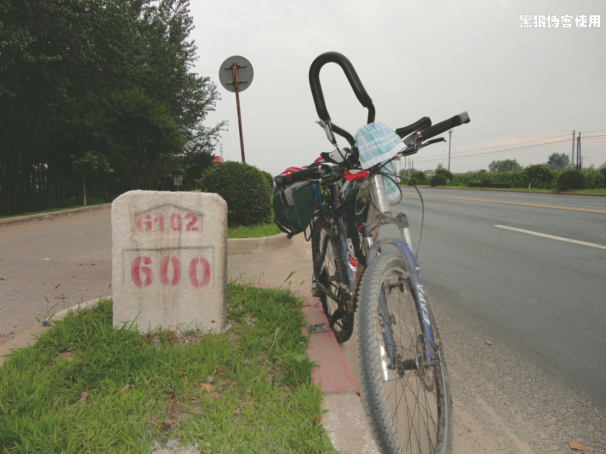
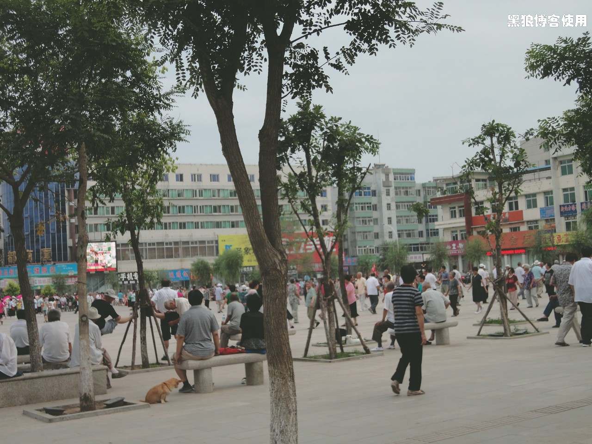

黑狼语录：
- （这几天）我用磨练屁股的方式来磨练意志
还是昨天那个时间起床，收拾的比较快，出门的时候 7:30 左右。骑着自行车慢慢跑了 30 分钟，才找到吃早饭的地方。
由于昨天行程的改变，今天的目的地暂时还不知道。昨天休息的比较早，今天状态好多了，除了手和屁股不舒服。
9:10 骑行了 22 公里，速度不错。


11:30 左右，碰到了一个北京的骑友，正在就读大学三年级，从北京去大连。总共一起骑行了 1 个半小时，两个人就是轻松、快速。中午一起吃了个饭，我也第一次在路上有了张本人的照片。

12:33 到了 G102 的 500 公里处（字迹不太清楚），现在走了 72 公里。
13:35 骑行了 92 公里，刚才和那个哥们交流了一下经验，我建议他把副把的仰角调低些，让手更舒服些，他建议我把车座子前头调低些。实验了一下，确实对前列腺的压力减少了，也减少了对前列腺前边的一些零件的压力，这几天确实让它们承受太多的压力了，对不起了（眼泪哗哗的）。
一段急行军。
16:05 到达北镇市。刚才沈阳的哥们说距离北镇还有 50 公里，怎么这么快就到了呢，中间就撒了泡尿，比想象中的近呀。现在走了 141 公里，才 16 点多，太早了，继续前进，黑山。
一段强行军，速度保持在 29-31 公里 / 小时。

16:53 已经骑行了 157公里，离黑山县还有 17 公里。刚才来了段强行军，速度在 29 左右，体力还不错。
17:26 到达 G102 的 600 公里处。
17:40 到了黑山，离黑山县中心还有 4 公里。本来还打算来 2 到 3 个小时，40-50 公里。不过哥们帮忙看了下，如果继续，必须一站坚持到新民，80 公里，太远了，没办法，只能提前休息。
 
黑山的广场上人们排着队在健身。

好几家宾馆都不让把自行车放房间里，找了好几个才找到可以放的。我一进到宾馆就开始把东西都铺开。
今天状态不错，就一直闷头赶路，照相也少了。总共骑行了 180公里，今天创造了我时速 48.2 公里/小时的最高纪录，现在从北京开始的总里程是 662 公里。